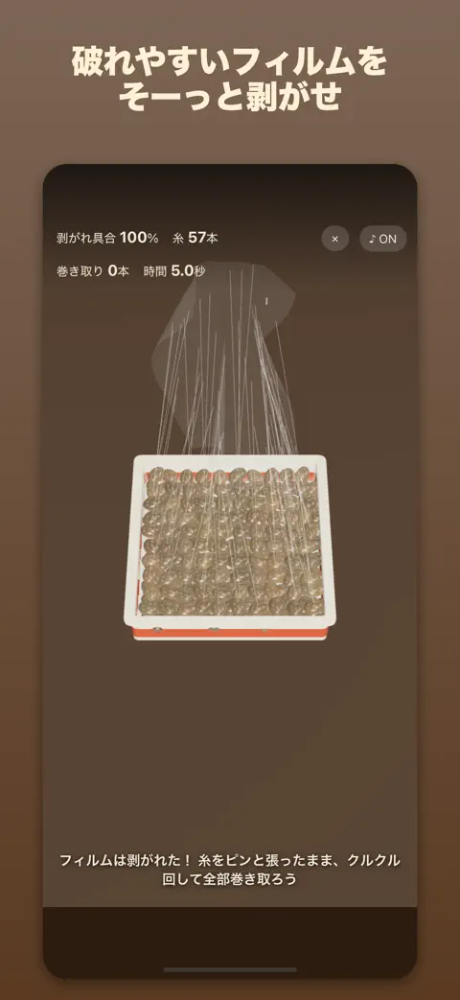
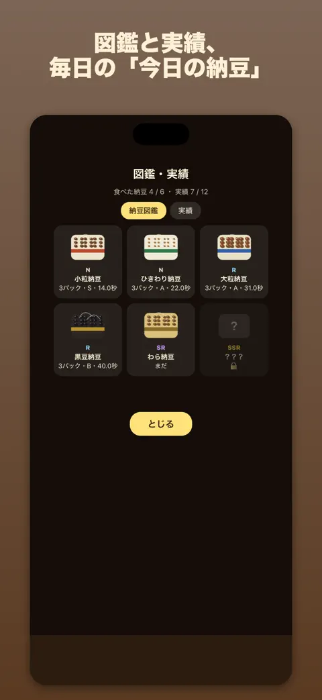
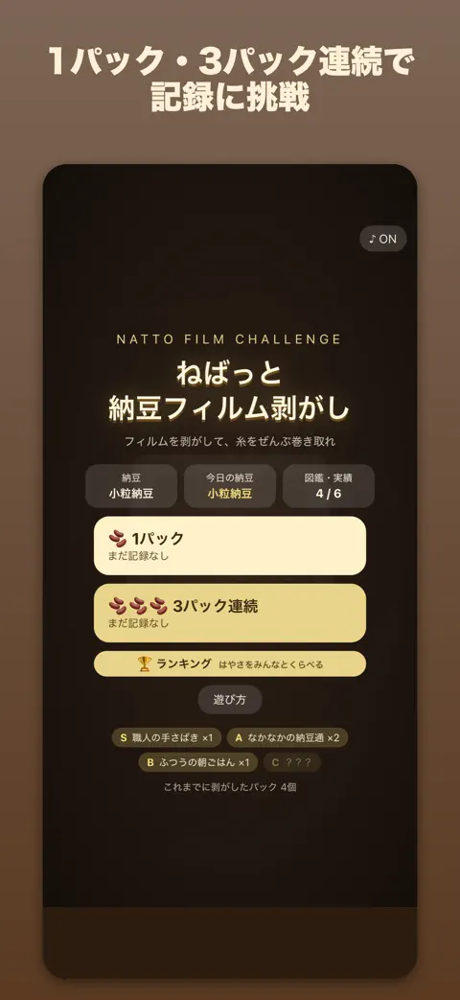

納豆フィルムの3Dゲーム（iPhone）
ねばっと 納豆フィルム剥がし
今日の納豆、最速で巻き取れ。
みんなとタイム勝負。
納豆パックのフィルムをそっとはがして、のびる糸をクルクル巻き取るまでのタイムを競う3Dゲーム。日がわりの「今日の納豆」は、みんな同じ納豆で勝負です。
- 毎日・みんな同じ納豆
- ランキング
- 10種類の納豆
無料・広告あり／iPhone（iOS 18 以降）




← 横にスクロールできます →
RANKING
「今日の納豆」でタイム勝負
- みんな同じ納豆日がわりの1種類に、みんなで挑戦。何回でも挑戦でき、その日のいちばん良いスコアが入ります。
- いろいろなランキング「今週の合計」や、納豆の種類ごとの難しさでならした1パックのタイム、巻き取った糸の合計も。
- 名前を決めるだけサインインはいりません。ニックネームを決めるだけで参加でき、記録はいつでも消せます。
こんな人におすすめ
- 朝ごはんの納豆が好きな人
- 指先のちょっとしたテクニックを競いたい人
- 短い時間で、何度も挑戦したい人
遊び方は3ステップ
- はがす光っている角をつまんで、ゆっくりフィルムをはがします。
- 張る高く持ち上げて、糸をピンと張ります。
- 巻き取る円をえがくように動かして、糸をクルクル巻き取ります。勢いよく引くと切れてペナルティ。
特徴
- 10種類の納豆ひきわり・大粒・黒豆・わら納豆など
- 3パック連続3つ続けて合計タイムを競う
- 12の実績ランク S〜C も
- 毎日今日の納豆まだ出会っていない納豆に会えることも
くわしい遊び方
納豆パックのフィルムを剥がして、のびる糸をぜんぶ巻き取るまでのタイムを競います。
- 剥がす：光っている角をつまんで、ゆっくり持ち上げます。速く引くと破れます
- 巻き取る：剥がしたら高く持ち上げて糸をピンと張り、円を描くように動かしてクルクル巻き取ります
- 10種類の納豆：小粒・ひきわり・大粒・黒豆・わら納豆・青大豆・雪わり・金の納豆など。種類で糸の出かたや切れやすさがちがいます
- 図鑑・実績：遊ぶほど新しい納豆に出会えます。毎日ちがう「今日の納豆」もあります
- 今日のスコア：「今日の納豆」の1回目のスコアがランキングに入ります。動画を見ると、その日にもう1回だけチャンスがあります（良いほうが入ります）
よくある質問
無料ですか？
はい、無料でダウンロードして遊べます（広告あり）。App Store のページからどうぞ。
どの端末で使えますか？
iPhone（iOS 18 以降）で使えます。Android 版はありません。
途中でやめたい
遊んでいる途中に左上の ❚❚ を押すと、つづける・はじめから・タイトルへもどる を選べます。
音を消したい
画面右上の ♪ ボタンで、音のオン・オフを切り替えられます。
新しい納豆が選べない
遊んだパックの数やランクで、新しい納豆が増えていきます。図鑑に解放の条件が出ています。
記録を消したい・引き継ぎたい
記録はこの iPhone の中に保存しています（ランキングに名前をのせた場合は、ニックネームと記録だけを送ります。ランキングの画面の「ランキングから自分の記録を消す」でいつでも消せます）。アプリを削除すると記録も消えます。ほかの端末への引き継ぎにはまだ対応していません。
お問い合わせ
不具合やご要望は、メールでお知らせください。お使いの iPhone の機種と iOS のバージョンを書いていただけると助かります。